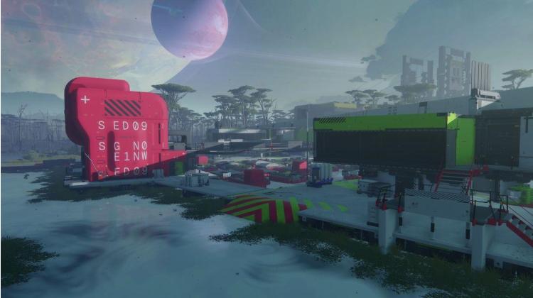

Thế giới trong game được hình thành từ sự tồn tại đan xen giữa: những công trình do con người xây dựng; các cơ sở nghiên cứu và khai thác công nghệ; hệ thống kiến trúc công nghiệp, quân sự và hạ tầng kỹ thuật; môi trường tự nhiên ngoài hành tinh với những yếu tố sinh học xa lạ; những dấu tích của các sự kiện và nền văn minh trước đó.
Bối cảnh này tạo nên một mâu thuẫn quan trọng: con người đang cố gắng kiểm soát một môi trường mà bản thân họ không hoàn toàn thấu hiểu. Đây là nền tảng để Bungie xây dựng cảm giác cô lập, nguy hiểm và bí ẩn thông qua thiết kế không gian.
Theo Bungie, thế giới Marathon được xây dựng bằng cách kết hợp thiết kế bối cảnh, gameplay và những câu chuyện có thể khám phá trực tiếp trong môi trường.

Bảng phân tích cấu trúc không gian, đặc điểm tạo hình và vai trò đồ họa định hình bản sắc thế giới Tau Ceti IV:
| Không gian | Đặc điểm tạo hình | Vai trò đồ họa |
|---|---|---|
| Môi trường tự nhiên | Địa hình ngoài hành tinh, thảm thực vật và hệ sinh thái lạ | Tạo cảm giác xa lạ |
| Môi trường nhân tạo | Công trình công nghiệp, cơ sở nghiên cứu, khu khai thác | Thể hiện dấu ấn con người |
| Không gian nối tiếp | Hành lang, khu vực kết nối, vùng giao thoa giữa tự nhiên và nhân tạo | Tạo chiều sâu và dẫn dắt người chơi |
Sự đối lập giữa môi trường tự nhiên và kiến trúc nhân tạo chính là một trong những yếu tố quan trọng tạo nên bản sắc không gian của game. Đồng thời đây cũng là một trong những yếu tố thu hút đối tượng người chơi.